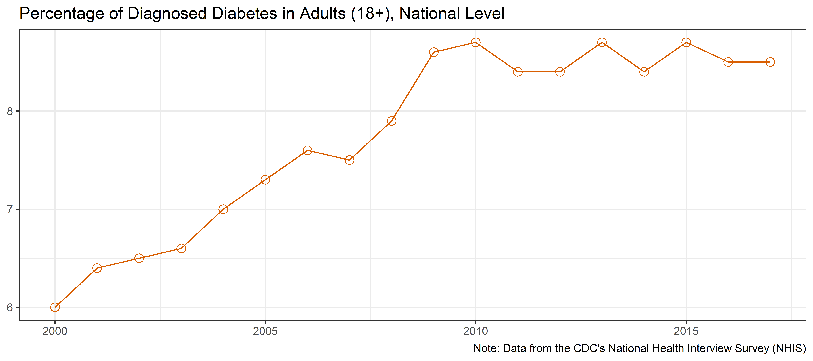

Diabetes is growing at an epidemic rate in the United States. In North Carolina alone, diabetes and prediabetes cost an estimated $10.9 billion each year (American Diabetes Asssociation, 2015). This post introduces the exploration of the Diabetes epidemic in North Carolina. Through a series of posts this project will examine various public data available on diabetes and explore possible solutions to address the rise of diabetes in North Carolina. This investigation stems from the Capstone project of my Health Care Informatics Masters program. This post will answer the following questions:
- What is the overall trend of diabetes prevalence in the United States?
- What is the trend of diabetes at a State Level and how does diabetes prevalence vary by state and region?
- How do trends in diabetes prevalence vary across counties of North Carolina?
- In which counties of North Carolia the most change in diabetes prevalence occur?
- How does change in diabetes prevalence compares between rural and urban counties?
This section contains technical information for deeper analysis and reproduction. Casual readers are invited to skip it.
Packages used in this report.
# Attach these packages so their functions don't need to be qualified: http://r-pkgs.had.co.nz/namespace.html#search-path
library(magrittr) # enables piping : %>%
library(dplyr) # data wrangling
library(ggplot2) # graphs
library(tidyr) # data tidying
library(maps)
library(mapdata)
library(sf)
library(readr)Definitions of global object (file paths, factor levels, object groups ) used throughout the report.
#set ggplot theme
ggplot2::theme_set(theme_bw())The data for this exploration comes from several sources:
The Diabetes data set for state and county levels were sourced from the US Diabetes Surveillance System; Division of Diabetes Translation - Centers for Disease Control and Prevention. The data was downloaded one year per file, and compiled into a single data set for analysis.
The Diabetes data set for National level data were sourced from the CDC’s National Health Interview Survey (NHIS)
The list of rural counties was taken from The Office of Rural Health Policy, the list is available here
# load the data, and have all column names in lowercase
nc_diabetes_data_raw <- read_csv("https://raw.githubusercontent.com/mmmmtoasty19/nc-diabetes-epidemic-2020/62bdaa6971fbdff09214de7c013d40122abbe40d/data-public/derived/nc-diabetes-data.csv") %>%
rename_all(tolower)
us_diabetes_data_raw <- read_csv("https://github.com/mmmmtoasty19/nc-diabetes-epidemic-2020/raw/62bdaa6971fbdff09214de7c013d40122abbe40d/data-public/raw/us_diabetes_totals.csv"
,skip = 2)
rural_counties <- read_csv("https://github.com/mmmmtoasty19/nc-diabetes-epidemic-2020/raw/b29bfd93b20b73a7000d349cb3b55fd0822afe76/data-public/metadata/rural-counties.csv")
county_centers_raw <- read_csv("https://github.com/mmmmtoasty19/nc-diabetes-epidemic-2020/raw/b29bfd93b20b73a7000d349cb3b55fd0822afe76/data-public/raw/nc_county_centers.csv", col_names = c("county", "lat","long"))
diabetes_atlas_data_raw <- read_csv("https://raw.githubusercontent.com/mmmmtoasty19/nc-diabetes-epidemic-2020/b29bfd93b20b73a7000d349cb3b55fd0822afe76/data-public/raw/DiabetesAtlasData.csv"
,col_types = cols(LowerLimit = col_skip(),
UpperLimit = col_skip(),
Percentage = col_double()), skip = 2)# load in both US State Map and NC County Map
nc_counties_map_raw <- st_as_sf(map("county",region = "north carolina", plot = FALSE,fill = TRUE)) %>%
mutate_at("ID", ~stringr::str_remove(.,"north carolina,"))
state_map_raw <- st_as_sf(map("state",plot = FALSE,fill = TRUE ))
nc_cities <- st_as_sf(read_csv("https://github.com/mmmmtoasty19/nc-diabetes-epidemic-2020/raw/b29bfd93b20b73a7000d349cb3b55fd0822afe76/data-public/metadata/nc_cities.csv"),
coords = c("long", "lat")
,remove = FALSE
,agr = "constant"
,crs = 4326)The combined data used in this anaylsis can be downloaded here. The only tweaks done here are to combine the rural counties column, and the data for creating maps.
county_centers <- county_centers_raw %>%
mutate_all(~stringr::str_replace_all(.,
c("\\°" = ""
,"\\+" = ""
,"\\–" = "-"
)
)
) %>%
mutate(across(c("lat","long"), ~iconv(.,from = 'UTF-8', to = 'ASCII//TRANSLIT'))
,across(c("lat","long"),~stringr::str_remove_all(.,"\\?"))) %>%
mutate_at(c("lat","long"),as.numeric) %>%
mutate(across("long", ~(. * -1))) %>%
mutate_at("county", tolower)
us_diabetes_data <- us_diabetes_data_raw %>%
filter(Year >= 2000) %>%
select( "Year","Total - Percentage") %>%
rename(year = Year , us_pct = `Total - Percentage`)
diabetes_atlas_data <- diabetes_atlas_data_raw %>%
mutate_at("State", tolower) %>%
filter(Year >= 2000)
state_map_abb <- state_map_raw %>%
left_join(read_csv("https://github.com/mmmmtoasty19/nc-diabetes-epidemic-2020/raw/b29bfd93b20b73a7000d349cb3b55fd0822afe76/data-public/metadata/state-abb.csv") %>%
mutate_at("state", tolower)
,by = c("ID" = "state") )#join US totals to NC data
nc_diabetes_data <- nc_diabetes_data_raw %>%
mutate_at("county", ~stringr::str_replace_all(.,"Mcdowell","McDowell")) %>%
mutate(
rural = county %in% rural_counties$rural_counties
) %>%
mutate_at("county",tolower) %>%
left_join(us_diabetes_data)
nc_counties_map <- nc_counties_map_raw %>%
left_join(nc_diabetes_data, by = c("ID" = "county")) %>%
left_join(county_centers, by = c("ID" = "county")) %>%
rename(
center_long = long
,center_lat = lat)
state_map <- state_map_abb %>%
left_join(diabetes_atlas_data, by = c("ID" = "State")) %>%
rename_all(tolower)us_diabetes_data <- us_diabetes_data %>%
mutate(
change = lead(us_pct) - us_pct
,change = if_else(change > 0, TRUE, FALSE)
) %>%
mutate_at("change", ~stringr::str_replace_na(.,FALSE))
o_g1 <- us_diabetes_data %>%
ggplot(aes(x = year, y = us_pct)) +
geom_line(color= "#D95F02") +
# geom_line(aes(color = change, group = 1)) +
geom_point(shape = 21, size = 3,color= "#D95F02") +
# geom_point(aes(color = change),shape = 21, size = 3) +
scale_color_manual(values = c(
"TRUE" = "#D95F02"
,"FALSE" = "#7570B3"
), guide = FALSE) +
labs(
title = "Percentage of Diagnosed Diabetes in Adults (18+), National Level"
,x = NULL
,y = NULL
,caption = "Note: Data from the CDC's National Health Interview Survey (NHIS)"
)
o_g1
Overall, the national average for diagnosed diabetes sharply rose through the early 2000’s, leveling off around 2010. These numbers however, are estimates based on the self-reported response to the CDC’s National Health Interview Survey, and do not represent the actual confirmed diagnoses. The CDC estimates that 1 in 5 adults have undiagnosed diabetes, therefore the numbers reported by the NHIS are likely to underestimate the true prevalence (Centers for Disease Control and Prevention, 2020).
State and County level data on diabetes prevalence are taken from the CDC’s Behavioral Risk Factor Surveillance System (BRFSS). These results are based on the question “Has a doctor, nurse, or other health professional ever told you that you have diabetes?”. Women who only experienced diabetes during pregnancy were excluded from the counts. The BRFSS is an ongoing, monthly telephone survey of the non-institutionalized adults (aged 18 years or older) in each state. The year 2011 saw a major change to the methodology of the survey, which started to include homes without a landline phone. This change was expected to increase coverage of lower income, lower educational levels, and younger age groups, because these groups often exclusively rely on cellular telephones for personal communication.(Pierannunzi et al., 2012)
s_g1 <- state_map %>%
st_drop_geometry() %>%
ggplot(aes(x = year, y = percentage, color = region)) +
geom_line(aes(group = id ),alpha = 0.3,na.rm = TRUE) +
geom_smooth(method = "lm", se = FALSE) +
ggpmisc::stat_poly_eq(formula = y ~ + x ,
aes(label = paste(..eq.label.., ..rr.label.., sep = "~~~")),
parse = TRUE) +
geom_vline(xintercept = 2011, linetype = "dashed", color = "gray") +
scale_color_brewer(palette = "Dark2"
,direction = -1
,labels = snakecase::to_title_case
) +
labs(
title = "Percentage of Diagnosed Diabetes in Adults (18+) \nby State and Region"
,x = NULL
,y = NULL
,color = "Region"
,caption = "Regions from US Census Bureau"
)
s_g1The above graph shows diabetes prevalence trends by state, grouped into regions based on the US Census classification regions. While all regions of the United states show positive growth in diabetes prevalence, the south exhibits a slightly higher growth rate, as well as the highest prevalence.
s_g2 <- state_map %>%
st_drop_geometry() %>%
filter(region == "south") %>%
mutate_at("id", ~snakecase::to_title_case(.)) %>%
ggplot(aes(x = year, y = percentage)) +
geom_line(aes(group = id ),na.rm = TRUE, color= "#D95F02") +
gghighlight::gghighlight(id == "North Carolina", label_params = list(vjust = 3)) +
scale_y_continuous(breaks = seq(5,13,2)) +
scale_x_continuous(minor_breaks = seq(2000,2016,1)) +
labs(
title = "Percentage of Diagnosed Diabetes in Adults (18+) \nSouth Region"
,x = NULL
,y = NULL
,caption = "Regions from US Census Bureau"
) +
theme()
s_g2When focusing on the south region, North Carolina falls close to the middle of diabetes prevalence.
When examining the trajectory for North Carolina, we can see that it has been consistently higher than national average . We see that in 2016 there was a large spike in diagnosed cases; unfortunately this is the last available year so it is unclear whether the upward trend continues. The graph below compares state-level average to the national average. Notice that the trend line is slightly higher than in the previous graphs: this is due to the age cut offs used for National and State level data vs County Level data. Previous data used 18 years of age as a cutoff for classifying adults, whereas the county level data uses 20. Due to removing 18- and 19-year-olds from the population, who typically have less diagnosed cases of diabetes than those of older ages, the computed prevalence increases slightly.
d1 <- nc_diabetes_data %>%
group_by(year) %>%
summarise(
pct = mean(percentage)
,us_pct = mean(us_pct)
) %>%
pivot_longer(
cols = c("pct", "us_pct")
,names_to = "metric"
,values_to = "values"
) %>%
mutate(
metric = factor(metric
,levels = c("pct","us_pct")
,labels = c("NC", "National"))
)
nc_g1 <- d1 %>%
ggplot(aes(x = year, y = values, color = metric)) +
geom_line() +
geom_point(shape = 21, size = 3) +
geom_vline(xintercept = 2011, linetype = "dashed", color = "gray") +
scale_y_continuous(labels = function(x) paste0(x, "%")) +
scale_color_brewer(palette = "Dark2") +
labs(
x = NULL
,y = NULL
,color = NULL
,title = "Percent of Adults (20+) with Diagnosed Diabetes"
)
nc_g1 We see a spike in 2016, the last year for which the data are available. However, we should be careful with our interpretation of this pattern, because the examination of the county-level trajectories reveals an aberration in the trend that requires a more rigorous investigation.
nc_g1a <- nc_diabetes_data %>%
ggplot(aes(x = year, y = percentage)) +
geom_line(aes(group = county),alpha = 0.4) +
labs(
x = NULL
,y = NULL
,color = NULL
)
nc_g1aWhile all of North Carolina has a higher prevalence than the national average, rural counties have systematically higher prevalence of diabetes than urban counties. Note that after 2011 both Urban and Rural counties break the upward trend exhibited in the previous 5 years. This could be explained by the addition of cell phones to the BRFS Survey as many rural areas are often lower income areas and may only rely on a cell phone for communication. As mentioned previously there is an odd spike in case in 2016 that can’t be explained by current documentation. For the purpose of this evaluation 2016 will be excluded from the county level data since the odd trend can not be explained and no further data is available to determine if this is a real spike or could be attributed to methodology change or data quality.
d2 <- nc_diabetes_data %>%
select(-us_pct) %>%
mutate(
pct_rural = if_else(rural == TRUE, percentage, NULL)
,pct_urban = if_else(rural == FALSE, percentage, NULL)
) %>%
select(-countyfips,-percentage) %>%
group_by(year) %>%
summarise(
pct_rural = mean(pct_rural,na.rm = TRUE)
,pct_urban = mean(pct_urban,na.rm = TRUE)
) %>% left_join(us_diabetes_data) %>%
pivot_longer(
cols = c("us_pct", "pct_rural","pct_urban")
,names_to = "metric"
,values_to = "value"
,values_drop_na = TRUE
) %>%
mutate(
metric = factor(metric,
levels = c("pct_rural","pct_urban","us_pct")
,labels = c("Rural","Urban","US")
)
)
nc_g2 <- d2 %>% ggplot(aes(x = year, y = value, color = metric)) +
geom_line() +
geom_point(shape = 21, size = 3) +
geom_vline(xintercept = 2011, linetype = "dashed", color = "gray") +
scale_y_continuous(labels = function(x) paste0(x, "%")) +
scale_color_brewer(palette = "Dark2") +
labs(
x = NULL
,y = NULL
,color = NULL
,title = "Percent of Adults (20+) with Diagnosed Diabetes \nDisplaying Rural vs Urban"
)
nc_g2County level data first became available in 2004, three years of data is used to arrive at these estimates. For example, the 2006 estimates were computed using the data from 2005, 2006, and 2007 BRFS survey rounds. The county-level estimates were based on indirect model-dependent estimates using Bayesian multilevel modeling techniques(Barker et al., 2013; JNK, 2003 ). This model-dependent approach employs a statistical model that “borrows strength” in making an estimate for one county from BRFSS data collected in other counties and states. Multilevel Binomial regression models with random effects of demographic variables (age 20-44, 45-64, >=65; race/ethnicity; sex) at the county-level were developed. Estimates were adjusted for age to the 2000 US standard population using age groups of 20-44, 45-64, and 65 or older(Klein & Schoenborn, 2001).
g50 <- nc_diabetes_data %>%
filter(year < 2015) %>%
mutate(
rural = factor(rural
,levels = c(TRUE,FALSE)
,labels = c("Rural", "Urban")
)
) %>%
ggplot(aes(x = year, y = percentage, color = rural)) +
geom_line(aes(group = county),alpha = 0.3) +
geom_smooth(aes(group = rural), method = "loess", se= FALSE, size = 1.1) +
scale_color_brewer(palette = "Dark2") +
labs(
title = "Percent of Adults (20+) with Diagnosed Diabetes \nAll North Carolina Counties"
,x = NULL
,y = NULL
,color = NULL
)
g50When viewing all county trend lines together, we see that the loess line for both urban and rural follows a similar trend for the time period.
The following graphs displays the total estimated prevalence of Diabetes in each off the 100 North Carolina counties. To keep the scaling consistent between the graphs, we binned the estimates into 6 intervals of the same size. Rural counties are highlighted with a stronger border line as well as a letter “R” in respective geographic centers. These graphs allow us to view geographical clusters of diabetes prevalence.
nc_counties_map_binned <- nc_counties_map %>%
filter(year < 2015) %>%
mutate(
bin = dlookr::binning(.$percentage, nbins = 6 ,type = "equal")
,bin = forcats::fct_recode(bin
,"6.5 - 7.9" = "[6.5,7.97]"
,"8.0 - 9.4" = "(7.97,9.43]"
,"9.5 - 10.9" = "(9.43,10.9]"
,"11.0 - 12.4" = "(10.9,12.4]"
,"12.5 - 13.8" = "(12.4,13.8]"
,"13.9 - 15.3" = "(13.8,15.3]"
)
)
c_g1 <- nc_counties_map_binned %>%
filter(year %in% c(2006,2014)) %>%
ggplot() +
geom_sf() + #blank geom_sf keeps gridlines from overlapping map
geom_sf(aes(fill = bin,color = rural)) +
geom_sf(data = nc_cities) +
ggrepel::geom_text_repel(data = nc_cities,
aes(x = long, y = lat, label = city)
,nudge_y = c(-1,1,1,-1,1)
,nudge_x = c(0,0,0,-1,0)
) +
geom_text(data = . %>% filter(rural == TRUE)
,aes(x = center_long, y = center_lat)
,label = "R"
,color = "#696969"
) +
coord_sf(xlim = c(-84.5,-75.5), ylim = c(33.75,37)) +
facet_wrap(~year) +
scale_fill_viridis_d(alpha = 0.6, direction = -1) +
scale_color_manual(
values = c(
"FALSE" = "gray"
,"TRUE" = "black"
),guide = 'none') +
labs(
title = "Estimated Diabetes in Adults (20+) by County"
,fill = "Percentage"
,y = NULL
,x = NULL
) +
theme(
panel.background = element_rect(fill = "aliceblue")
,panel.grid.major = element_line(color = "#D4D4D4", linetype = "dashed",
size = 0.5)
,legend.position = "bottom"
,plot.title = element_text(hjust = 0.5)
)
c_g1The following box plot displays the distribution of estimated cases by county from 2006 to 2014. For all years of current data the mean of rural counties is higher then that of their Urban counterparts.
c_g1c <- nc_counties_map %>%
mutate(
rural = factor(rural
,levels = c(TRUE,FALSE)
,labels = c("Rural", "Urban")
)) %>%
filter(year < 2015) %>%
ggplot(aes(x = year, y = percentage, group = interaction(year,rural), fill = rural)) +
geom_boxplot(alpha = 0.5) +
scale_fill_brewer(palette = "Dark2") +
scale_x_continuous(breaks = seq(2004,2014,2)) +
labs(
x = NULL
,y = NULL
,fill = NULL
,title = "Distribution of Estimated Cases by County 2006 - 2014"
)
c_g1cThe following graphs display the overall change in estimated prevalence between 2006 to 2014.
d3 <- nc_counties_map %>%
st_drop_geometry() %>%
filter(year %in% c(2006,2014)) %>%
select(-countyfips,-us_pct) %>%
pivot_wider(names_from = "year"
,values_from = "percentage") %>%
mutate(
pct_p = `2014` - `2006`
,pct_c = ((`2014` - `2006`)/`2006`) * 100
) %>%
left_join(nc_counties_map_raw) %>%
st_as_sf()
c_g4 <- d3 %>%
ggplot() +
geom_sf() + #blank geom_sf keeps gridlines from overlapping map
geom_sf(aes(fill = pct_c ,color = rural)) +
geom_sf(data = nc_cities) +
ggrepel::geom_text_repel(data = nc_cities,
aes(x = long, y = lat, label = city)
,nudge_y = c(-1,1,1,-1,1)
,nudge_x = c(0,0,0,-1,0)
) +
geom_text(data = . %>% filter(rural == TRUE)
,aes(x = center_long, y = center_lat)
,label = "R"
,color = "#696969"
) +
# scale_fill_viridis_c(alpha = 0.6, direction = -1) +
scale_fill_gradient2(
low = "#d01c8b"
,mid = "#f7f7f7"
,high = "#4dac26"
,midpoint = 0
) +
scale_color_manual(
values = c(
"FALSE" = "gray"
,"TRUE" = "black"
),guide = 'none') +
labs(
title = "Percentage Change of Diagnosed Diabetes 2006-2014"
,fill = "Percentage"
,y = NULL
,x = NULL
) +
theme(
panel.background = element_rect(fill = "aliceblue")
,panel.grid.major = element_line(color = "#D4D4D4", linetype = "dashed",
size = 0.5)
)
c_g4The following chart displays the density curve of the percentage change for both rural and urban counties. It is notable that the mean of change for Urban counties is actually higher than the mean for rural counties. However, we also see that most change for both regions is positive growth. In fact only 16 rural, and 10 Urban counties experienced negative change in the given time frame. While 35 rural and 34 urban counties experience growth in the same period.
d4 <- d3 %>%
st_drop_geometry() %>%
mutate(
rural = factor(rural
,levels = c(TRUE,FALSE)
,labels = c("Rural", "Urban")
)
)
mean_d4 <- d4 %>%
group_by(rural) %>%
summarise(.groups = "keep"
,pct_c = mean(pct_c)
)
g51 <- d4 %>%
ggplot(aes(x = pct_c, fill = rural, y = ..density.., color = rural)) +
geom_histogram(binwidth = 5, position = "identity", alpha = 0.3) +
geom_density(alpha = 0.5) +
facet_wrap(~rural, ncol = 1) +
geom_vline(aes(xintercept = pct_c), data = mean_d4) +
geom_text(aes(x = pct_c, y = 0.038, label = round(pct_c, 2))
,data = mean_d4
,hjust = -0.15
,size = 5
,color = "#000000") +
geom_vline(xintercept = 0, linetype = "dashed", color = "#696969") +
scale_color_brewer(palette = "Dark2", guide = NULL) +
scale_fill_brewer(palette = "Dark2", guide = NULL) +
labs(
x = "Percentage Change"
,y = "Density"
,fill = NULL
)
g51The original hypothesis of this report was that rural counties were growing at a higher rate then there urban counterparts. Through out this post it has been shown that this hypothesis is incorrect, just being a rural county does not indicate diabetes growth, in fact the growth rate throughout North Carolina has been consistent. Further posts will explore other reasons for these trends, as the current post merely explores the trends and differences using data visualizations, a more rigorous and formal evaluation of these comparison is in order.
===========================================================================
For the sake of documentation and reproducibility, the current report was rendered in the following environment. Click the line below to expand.
Environment
if( requireNamespace("devtools", quietly = TRUE) ) {
devtools::session_info()
} else {
sessionInfo()
} - Session info -------------------------------------------------------------------------------------------------------
setting value
version R version 3.6.2 (2019-12-12)
os Windows 10 x64
system x86_64, mingw32
ui RTerm
language (EN)
collate English_United States.1252
ctype English_United States.1252
tz America/New_York
date 2020-06-28
- Packages -----------------------------------------------------------------------------------------------------------
package * version date lib source
abind 1.4-5 2016-07-21 [1] CRAN (R 3.6.0)
acepack 1.4.1 2016-10-29 [1] CRAN (R 3.6.3)
assertthat 0.2.1 2019-03-21 [1] CRAN (R 3.6.1)
backports 1.1.7 2020-05-13 [1] CRAN (R 3.6.3)
base64enc 0.1-3 2015-07-28 [1] CRAN (R 3.6.0)
bit 1.1-15.2 2020-02-10 [1] CRAN (R 3.6.2)
bit64 0.9-7 2017-05-08 [1] CRAN (R 3.6.0)
blob 1.2.1 2020-01-20 [1] CRAN (R 3.6.2)
blogdown 0.19 2020-05-22 [1] CRAN (R 3.6.3)
bookdown 0.19 2020-05-15 [1] CRAN (R 3.6.3)
broom 0.5.6 2020-04-20 [1] CRAN (R 3.6.3)
callr 3.4.3 2020-03-28 [1] CRAN (R 3.6.3)
car 3.0-8 2020-05-21 [1] CRAN (R 3.6.3)
carData 3.0-4 2020-05-22 [1] CRAN (R 3.6.3)
cellranger 1.1.0 2016-07-27 [1] CRAN (R 3.6.1)
checkmate 2.0.0 2020-02-06 [1] CRAN (R 3.6.3)
chron 2.3-55 2020-02-02 [1] CRAN (R 3.6.3)
class 7.3-17 2020-04-26 [2] CRAN (R 3.6.3)
classInt 0.4-3 2020-04-07 [1] CRAN (R 3.6.3)
cli 2.0.2 2020-02-28 [1] CRAN (R 3.6.3)
cluster 2.1.0 2019-06-19 [2] CRAN (R 3.6.2)
colorspace 1.4-1 2019-03-18 [1] CRAN (R 3.6.1)
corrplot 0.84 2017-10-16 [1] CRAN (R 3.6.3)
crayon 1.3.4 2017-09-16 [1] CRAN (R 3.6.1)
curl 4.3 2019-12-02 [1] CRAN (R 3.6.2)
data.table 1.12.8 2019-12-09 [1] CRAN (R 3.6.2)
DBI 1.1.0 2019-12-15 [1] CRAN (R 3.6.2)
desc 1.2.0 2018-05-01 [1] CRAN (R 3.6.2)
devtools 2.3.0 2020-04-10 [1] CRAN (R 3.6.3)
digest 0.6.21 2019-09-20 [1] CRAN (R 3.6.1)
dlookr 0.3.13 2020-01-09 [1] CRAN (R 3.6.3)
DMwR 0.4.1 2013-08-08 [1] CRAN (R 3.6.3)
dplyr * 1.0.0 2020-05-29 [1] CRAN (R 3.6.3)
e1071 1.7-3 2019-11-26 [1] CRAN (R 3.6.3)
ellipsis 0.3.1 2020-05-15 [1] CRAN (R 3.6.3)
evaluate 0.14 2019-05-28 [1] CRAN (R 3.6.1)
fansi 0.4.1 2020-01-08 [1] CRAN (R 3.6.2)
farver 2.0.3 2020-01-16 [1] CRAN (R 3.6.2)
forcats 0.5.0 2020-03-01 [1] CRAN (R 3.6.3)
foreign 0.8-75 2020-01-20 [2] CRAN (R 3.6.2)
Formula 1.2-3 2018-05-03 [1] CRAN (R 3.6.0)
fs 1.4.1 2020-04-04 [1] CRAN (R 3.6.3)
generics 0.0.2 2018-11-29 [1] CRAN (R 3.6.1)
gghighlight 0.3.0 2020-03-29 [1] CRAN (R 3.6.3)
ggplot2 * 3.3.1 2020-05-28 [1] CRAN (R 3.6.3)
ggpmisc 0.3.5 2020-06-01 [1] CRAN (R 3.6.3)
ggrepel 0.8.2 2020-03-08 [1] CRAN (R 3.6.3)
glue 1.4.1 2020-05-13 [1] CRAN (R 3.6.3)
gridExtra 2.3 2017-09-09 [1] CRAN (R 3.6.1)
gsubfn 0.7 2018-03-16 [1] CRAN (R 3.6.3)
gtable 0.3.0 2019-03-25 [1] CRAN (R 3.6.1)
haven 2.3.1 2020-06-01 [1] CRAN (R 3.6.3)
Hmisc 4.4-0 2020-03-23 [1] CRAN (R 3.6.3)
hms 0.5.3 2020-01-08 [1] CRAN (R 3.6.2)
htmlTable 1.13.3 2019-12-04 [1] CRAN (R 3.6.3)
htmltools 0.4.0 2019-10-04 [1] CRAN (R 3.6.1)
htmlwidgets 1.5.1 2019-10-08 [1] CRAN (R 3.6.1)
httr 1.4.1 2019-08-05 [1] CRAN (R 3.6.2)
inum 1.0-1 2019-04-25 [1] CRAN (R 3.6.3)
jpeg 0.1-8.1 2019-10-24 [1] CRAN (R 3.6.1)
kableExtra 1.1.0 2019-03-16 [1] CRAN (R 3.6.3)
KernSmooth 2.23-17 2020-04-26 [2] CRAN (R 3.6.3)
knitr * 1.28 2020-02-06 [1] CRAN (R 3.6.2)
labeling 0.3 2014-08-23 [1] CRAN (R 3.6.0)
lattice 0.20-41 2020-04-02 [2] CRAN (R 3.6.3)
latticeExtra 0.6-29 2019-12-19 [1] CRAN (R 3.6.3)
libcoin 1.0-5 2019-08-27 [1] CRAN (R 3.6.3)
lifecycle 0.2.0 2020-03-06 [1] CRAN (R 3.6.3)
magrittr * 1.5 2014-11-22 [1] CRAN (R 3.6.1)
mapdata * 2.3.0 2018-03-30 [1] CRAN (R 3.6.2)
maps * 3.3.0 2018-04-03 [1] CRAN (R 3.6.2)
MASS 7.3-51.6 2020-04-26 [2] CRAN (R 3.6.3)
Matrix 1.2-18 2019-11-27 [2] CRAN (R 3.6.2)
memoise 1.1.0 2017-04-21 [1] CRAN (R 3.6.2)
mgcv 1.8-31 2019-11-09 [2] CRAN (R 3.6.2)
mice 3.9.0 2020-05-14 [1] CRAN (R 3.6.3)
moments 0.14 2015-01-05 [1] CRAN (R 3.6.0)
munsell 0.5.0 2018-06-12 [1] CRAN (R 3.6.1)
mvtnorm 1.1-1 2020-06-09 [1] CRAN (R 3.6.3)
nlme 3.1-148 2020-05-24 [2] CRAN (R 3.6.3)
nnet 7.3-14 2020-04-26 [2] CRAN (R 3.6.3)
nortest 1.0-4 2015-07-30 [1] CRAN (R 3.6.0)
openxlsx 4.1.5 2020-05-06 [1] CRAN (R 3.6.3)
partykit 1.2-8 2020-06-10 [1] CRAN (R 3.6.3)
pillar 1.4.4 2020-05-05 [1] CRAN (R 3.6.3)
pkgbuild 1.0.8 2020-05-07 [1] CRAN (R 3.6.3)
pkgconfig 2.0.3 2019-09-22 [1] CRAN (R 3.6.1)
pkgload 1.1.0 2020-05-29 [1] CRAN (R 3.6.3)
png 0.1-7 2013-12-03 [1] CRAN (R 3.6.0)
polynom 1.4-0 2019-03-22 [1] CRAN (R 3.6.1)
prettydoc 0.3.1 2019-11-23 [1] CRAN (R 3.6.3)
prettyunits 1.1.1 2020-01-24 [1] CRAN (R 3.6.2)
processx 3.4.2 2020-02-09 [1] CRAN (R 3.6.3)
proto 1.0.0 2016-10-29 [1] CRAN (R 3.6.3)
ps 1.3.3 2020-05-08 [1] CRAN (R 3.6.3)
purrr 0.3.4 2020-04-17 [1] CRAN (R 3.6.3)
quantmod 0.4.17 2020-03-31 [1] CRAN (R 3.6.3)
R6 2.4.1 2019-11-12 [1] CRAN (R 3.6.2)
RcmdrMisc 2.7-0 2020-01-14 [1] CRAN (R 3.6.3)
RColorBrewer 1.1-2 2014-12-07 [1] CRAN (R 3.6.0)
Rcpp 1.0.2 2019-07-25 [1] CRAN (R 3.6.1)
readr * 1.3.1 2018-12-21 [1] CRAN (R 3.6.1)
readxl 1.3.1 2019-03-13 [1] CRAN (R 3.6.1)
remotes 2.1.1 2020-02-15 [1] CRAN (R 3.6.3)
rio 0.5.16 2018-11-26 [1] CRAN (R 3.6.2)
rlang 0.4.6 2020-05-02 [1] CRAN (R 3.6.2)
rmarkdown 2.2 2020-05-31 [1] CRAN (R 3.6.3)
ROCR 1.0-11 2020-05-02 [1] CRAN (R 3.6.3)
rpart 4.1-15 2019-04-12 [2] CRAN (R 3.6.2)
rprojroot 1.3-2 2018-01-03 [1] CRAN (R 3.6.2)
RSQLite 2.2.0 2020-01-07 [1] CRAN (R 3.6.3)
rstudioapi 0.11 2020-02-07 [1] CRAN (R 3.6.2)
rvest 0.3.5 2019-11-08 [1] CRAN (R 3.6.2)
sandwich 2.5-1 2019-04-06 [1] CRAN (R 3.6.3)
scales 1.1.1 2020-05-11 [1] CRAN (R 3.6.3)
sessioninfo 1.1.1 2018-11-05 [1] CRAN (R 3.6.2)
sf * 0.9-4 2020-06-13 [1] CRAN (R 3.6.3)
smbinning 0.9 2019-04-01 [1] CRAN (R 3.6.3)
snakecase 0.11.0 2019-05-25 [1] CRAN (R 3.6.3)
sqldf 0.4-11 2017-06-28 [1] CRAN (R 3.6.3)
stringi 1.4.6 2020-02-17 [1] CRAN (R 3.6.2)
stringr 1.4.0 2019-02-10 [1] CRAN (R 3.6.1)
survival 3.2-3 2020-06-13 [2] CRAN (R 3.6.3)
testthat 2.3.2 2020-03-02 [1] CRAN (R 3.6.3)
tibble 3.0.1 2020-04-20 [1] CRAN (R 3.6.3)
tidyr * 1.1.0 2020-05-20 [1] CRAN (R 3.6.3)
tidyselect 1.1.0 2020-05-11 [1] CRAN (R 3.6.3)
tinytex 0.23 2020-05-19 [1] CRAN (R 3.6.3)
TTR 0.23-6 2019-12-15 [1] CRAN (R 3.6.2)
units 0.6-7 2020-06-13 [1] CRAN (R 3.6.3)
usethis 1.6.1 2020-04-29 [1] CRAN (R 3.6.3)
vctrs 0.3.1 2020-06-05 [1] CRAN (R 3.6.3)
viridisLite 0.3.0 2018-02-01 [1] CRAN (R 3.6.1)
webshot 0.5.2 2019-11-22 [1] CRAN (R 3.6.3)
withr 2.2.0 2020-04-20 [1] CRAN (R 3.6.3)
xfun 0.14 2020-05-20 [1] CRAN (R 3.6.3)
xml2 1.3.2 2020-04-23 [1] CRAN (R 3.6.3)
xtable 1.8-4 2019-04-21 [1] CRAN (R 3.6.1)
xts 0.12-0 2020-01-19 [1] CRAN (R 3.6.2)
yaml 2.2.0 2018-07-25 [1] CRAN (R 3.6.0)
zip 2.0.4 2019-09-01 [1] CRAN (R 3.6.2)
zoo 1.8-8 2020-05-02 [1] CRAN (R 3.6.3)
[1] C:/Users/belangew/Documents/R/win-library/3.6
[2] C:/Program Files/R/R-3.6.2/libraryAmerican Diabetes Asssociation. (2015). The burden of diabetes in north carolina. http://main.diabetes.org/dorg/PDFs/Advocacy/burden-of-diabetes/north-carolina.pdf
Barker, L. E., Thompson, T. J., Kirtland, K. A., Boyle, J. P., Geiss, L. S., McCauley, M. M., & Albright, A. L. (2013). Bayesian small area estimates of diabetes incidence by united states county, 2009. Journal of Data Science, 11(1), 269–280. https://www.ncbi.nlm.nih.gov/pmc/articles/PMC4537395/
Centers for Disease Control and Prevention. (2020). National diabetes statistics report. US Department of Health and Human Services. https://www.cdc.gov/diabetes/pdfs/data/statistics/national-diabetes-statistics-report.pdf
JNK, R. (2003). Small area estimation. https://onlinelibrary.wiley.com/doi/pdf/10.1002/0471722189.fmatter
Klein, R. J., & Schoenborn, C. A. (2001). Age adjustment using the 2000 projected u.s. Population. Healthy People 2000 Stat Notes, 20, 1–9.
Pierannunzi, C., Town, M., Garvin, W., Shaw, F. E., & Balluz, L. (2012). Methodologic changes in the behavioral risk factor surveillance system in 2011 and potential effects on prevalence estimates. Morbidity and Mortality Weekly Report, 61(22), 410–413. https://www.cdc.gov/mmwr/pdf/wk/mm6122.pdf